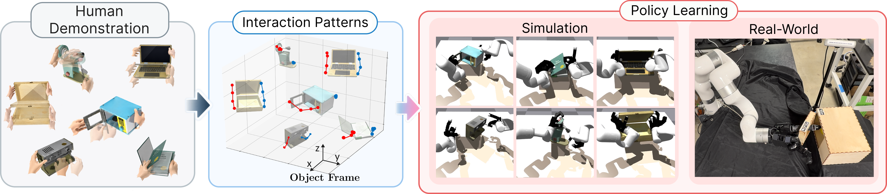
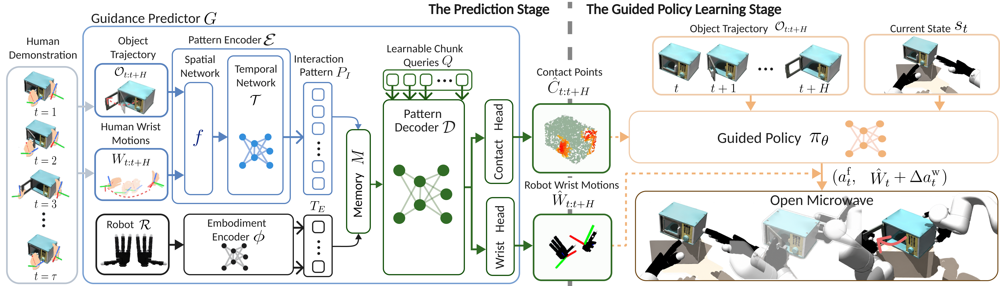
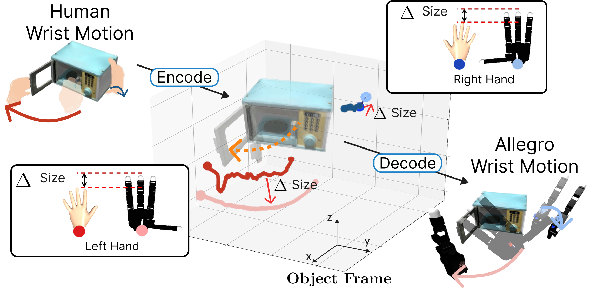
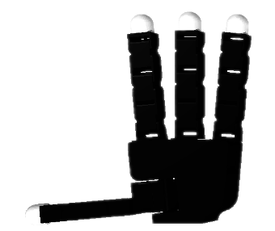
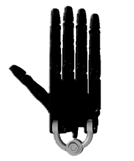
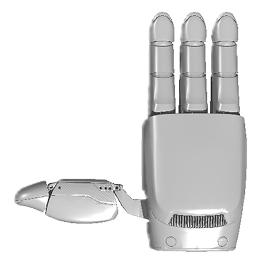
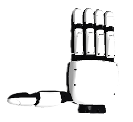
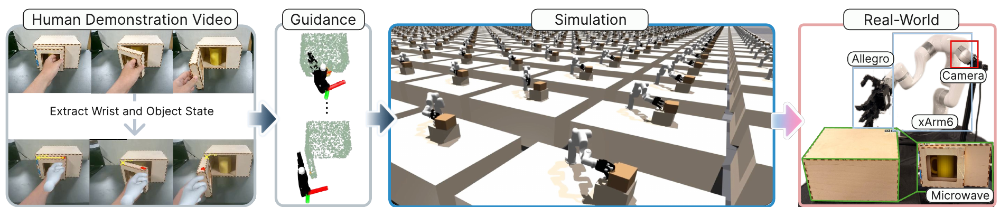

In this paper, we develop a method that enables bimanual dexterous hands to manipulate articulated objects with a high success rate without suffering from an embodiment gap. We observe that the correlation between hand motions and object motions is dictated by the object rather than the hands and can be learned from human-object demonstrations. Based on this observation, we propose PatternDex, a method that learns this correlation and represents it as a token sequence, which we call an interaction pattern. From this pattern, PatternDex estimates the wrist motions and contact points that fit the target robot, and then trains a reinforcement learning policy that exploits these estimates as guidance. Since the guidance fits the target embodiment, the policy explores only the actions that the target robot can execute and thus achieves high success rates. PatternDex also requires only simple fine-tuning to train a new robot, since it can reuse the learned interaction pattern. We evaluate PatternDex with bimanual dexterous hands on human demonstrations from the ARCTIC dataset. PatternDex achieves, on average, a 92.8% success rate with Allegro hands, while the state-of-the-art baseline achieves 52.2%. Also, it achieves success rates above 70% with three other robot hands after fine-tuning alone. Furthermore, we verify that the learned policy transfers well to a real-world task of opening a microwave.

Human demonstration (ARCTIC)
Interaction pattern: encode and decode

Estimated Allegro wrist motions and contact points

Allegro HandBox SR 99.9%
Espresso machine SR 98.7%
Laptop SR 94.2%
Microwave SR 98.6%
Mixer SR 99.5%
Notebook SR 66.0%

Shadow Hand
Paxini Hand
XHand| Method | Object / Traj ID | SR (%) ↑ | Pos. err. (cm) ↓ | Rot. err. (°) ↓ | Joint err. (°) ↓ | Contact err. (cm) ↓ |
|---|---|---|---|---|---|---|
| ObjDex | Box / s04_01 | 50.1 | 1.01 | 1.58 | 6.14 | – |
| PatternDex (w/o Contact) | 87.4 | 1.73 | 2.21 | 1.99 | – | |
| PatternDex (full) | 99.9 | 2.05 | 3.02 | 1.92 | 2.35 | |
| ObjDex | Espresso / s01_01 | 45.1 | 2.16 | 4.13 | 2.08 | – |
| PatternDex (w/o Contact) | 47.8 | 2.87 | 6.74 | 9.87 | – | |
| PatternDex (full) | 98.7 | 1.99 | 4.40 | 1.94 | 3.61 | |
| ObjDex | Laptop / s09_02 | 77.4 | 0.52 | 1.14 | 5.92 | – |
| PatternDex (w/o Contact) | 51.3 | 2.93 | 1.72 | 3.23 | – | |
| PatternDex (full) | 94.2 | 2.24 | 3.13 | 2.19 | 4.24 | |
| ObjDex | Microwave / s04_01 | 98.4 | 3.13 | 1.71 | 2.58 | – |
| PatternDex (w/o Contact) | 76.2 | 3.28 | 2.56 | 2.98 | – | |
| PatternDex (full) | 98.6 | 2.42 | 2.40 | 1.82 | 1.92 | |
| ObjDex | Mixer / s08_01 | 34.4 | 1.76 | 3.50 | 3.36 | – |
| PatternDex (w/o Contact) | 73.2 | 2.25 | 4.19 | 5.16 | – | |
| PatternDex (full) | 99.5 | 2.77 | 3.91 | 2.41 | 2.91 | |
| ObjDex | Notebook / s08_03 | 7.8 | 0.70 | 2.08 | 5.79 | – |
| PatternDex (w/o Contact) | 12.5 | 2.27 | 4.79 | 3.25 | – | |
| PatternDex (full) | 66.0 | 2.94 | 4.68 | 4.06 | 6.65 | |
| ObjDex | Mean | 52.2 | 1.55 | 2.36 | 4.31 | – |
| PatternDex (w/o Contact) | 58.1 | 2.55 | 3.70 | 4.41 | – | |
| PatternDex (full) | 92.8 | 2.40 | 3.59 | 2.39 | 3.61 |
| Robot | Box / s04_01 | Espresso / s01_01 | Laptop / s09_02 | Microwave / s04_01 | Mixer / s08_01 | Notebook / s08_03 | Mean |
|---|---|---|---|---|---|---|---|
| Allegro | 99.9±0.1 | 98.7±1.3 | 94.2±5.1 | 98.6±2.8 | 99.5±0.7 | 66.0±2.2 | 92.8±12.2 |
| Shadow | 96.3±4.5 | 88.5±5.6 | 51.6±2.3 | 78.0±3.2 | 97.0±2.0 | 92.3±4.7 | 84.0±15.8 |
| Paxini | 96.7±3.2 | 74.9±2.9 | 93.8±5.8 | 99.0±1.3 | 12.6±0.0 | 64.0±1.7 | 73.5±30.0 |
| XHand | 95.4±5.0 | 73.8±3.7 | 40.0±6.7 | 91.9±7.0 | 91.0±3.9 | 37.3±1.8 | 71.6±24.3 |
Since PatternDex has already learned the interaction pattern from ARCTIC, a new real-world task needs only a single human demonstration video and no robot demonstrations. CoTracker3 tracks the position and the hinge angle of the microwave, HaMeR tracks the human wrist pose, and the tracked trajectories are fed into the guidance predictor. The guided policy is trained in Isaac Gym and deployed directly on an Allegro hand mounted on an xArm6. The robot opens the door in 7 of 10 trials, with the door angle increasing from 0° to 74.2° over 100 steps.
Pipeline
Tracked wrist and object state → guidance → simulator training → real robot

Real-world rollout
Allegro hand on xArm6 opening the microwave with the policy trained in simulation
The insets show the tracked door angle, the front camera view, and the human demonstration used as reference.
@article{kim2026patterndex,
title = {PatternDex: Learning Interaction Patterns to Guide Reinforcement Learning of Bimanual Dexterous Manipulation of Articulated Objects},
author = {Kim, David Minkwan and Li, Runfa Blark and Lee, Beckham Po-Ju and Atanasov, Nikolay and Nguyen, Truong},
journal = {arXiv preprint arXiv:2610.04765},
year = {2026}
}